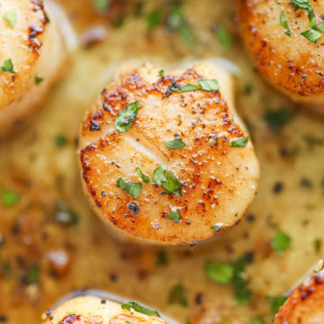

Scallops

Your scallops can turn out just like this!
Prior to creating this recipe I had always wondered how I could have decadent, rich, delicious
scallops in the comfort of my own home, but now overpriced restaurant scallops are a thing of the past!
This recipe will guide you to create the most delicious scallops in a lemon and garlic butter sauce
that will leave everyone who tastes them amazed that they were created by you!
Ingredients
- 1 lb sea scallops
- Juice of 1/2 lemon
- 4 cloves garlic, minced
- 2 tbs unsalted butter
- salt and pepper to taste
- olive oil, if desired
Steps
- First, begin by heating a pan over medium-high heat, then add oil
- When the oil is shimmering, add scallops to pan and cook on 2 minutes each side, seasoning scallops with salt and pepper
- Remove scallops from heat and turn heat to low. Add butter, garlic, lemon juice and season with salt and pepper to taste
- When garlic is fragrant and browned slightly, serve over scallops